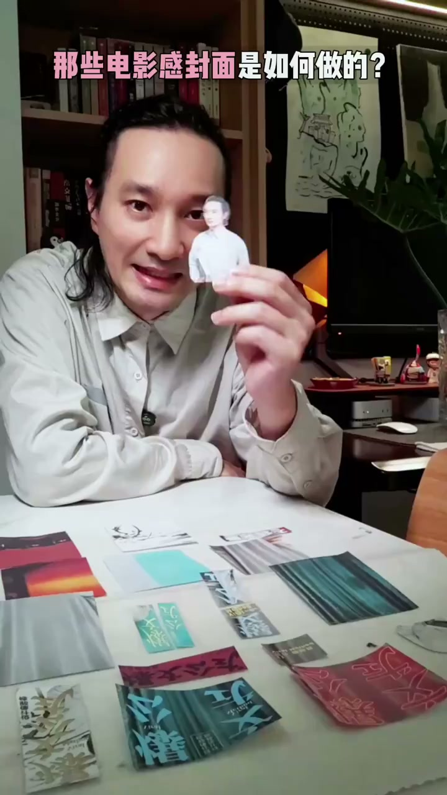
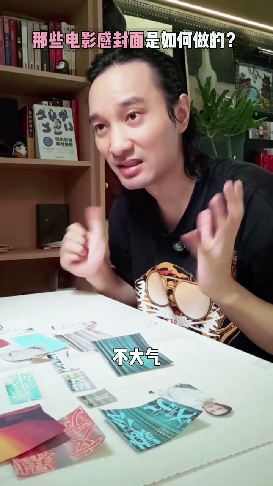

内容要点
这支 61 秒短片用桌面上的封面小样演示文字位置如何改变画面气质：人物居中、标题置顶，或把文字压在底部、移到左右两侧、填满画面，都会带来不同的视觉感受。创作者最后回到封面的目的：不是供人慢慢欣赏，而是让人愿意停下来。
从人物居中到左右排版
视频先以“人物居中、标题放在上方”为例，称这是一种经典的电影感构图。随后把普通文字压到画面底部，强调这种排法更稳定；再将标题移到左侧，用亮黄色点缀，继续比较文字位置变化带来的观感。

[00:01] 用桌面小样比较人物位置、标题位置和色彩点缀的变化。
Using tabletop mockups to compare changes in subject position, title position and color accents.
用文字制造疏密与视觉张力
接着，视频展示把文字放在右侧、采用错位排版的做法，并提到画面需要留出呼吸感。之后又尝试把标题置于中间，配合书法艺术字形成国潮感；再让标题填满画面，以增强视觉冲击力。最后把文字换成霓虹灯效果，作为另一种更具创意感的构图方向。

[00:10] 文字位置和留白共同决定画面的疏密与阅读路径。
Text placement and negative space together set the frame's density and reading path.
熟悉感来自电影海报的常见方法
当画面中的设计显得“眼熟”时，创作者直接点出原因：许多好看的电影海报也会使用类似的构图和文字处理方式。这一段没有展开具体海报案例，而是借“眼熟感”说明，上述方法并非孤立技巧，而是常见视觉设计思路的再运用。
[00:26] 视频将“眼熟感”归因于电影海报中常见的构图与文字处理。
The video attributes the “feels familiar” quality to composition and typography common in movie posters.
封面的任务是让人停下
结尾处，创作者回顾自己八年间设计一千多张海报的体会：封面不是单纯让人欣赏的，而是要让人停下来。吸引注意力，同时保持好看，才是封面设计要解决的问题；学习路径则是先模仿，再形成自己的创新。
总结
先安排人物、文字和留白的主次，再尝试色彩、字体与特效。构图服务的不是“看起来复杂”，而是让读者在滑动时愿意停住。